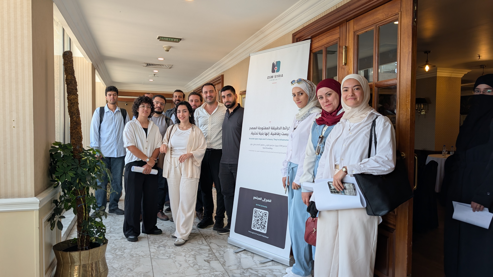
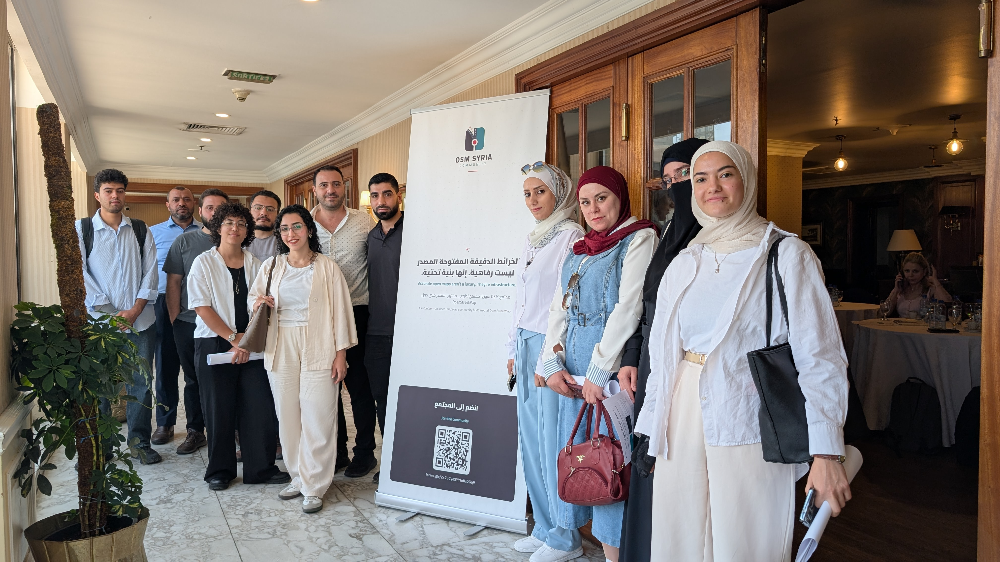

Organizer & Facilitator · OSM Syria / HOT


All community members were invited to a second OSM Syria in-person gathering in Damascus, held at Hotel Al-Sham. The agenda was participatory by design: introductions over coffee and tea, a welcome for new members and first-time participants, and an update on community news — from the earlier H2H grant to upcoming funding opportunities. The group discussed future plans together, along with the community's organizational needs: legal registration, a community website, and engagement with the global OpenStreetMap movement through OSMF's Local Chapters program. A technical session covered OSM data, Geofabrik extracts, the OSM planet file, and navigation and mapping applications.
The meeting produced concrete next steps: the group agreed to start a shared working document to capture ideas and open questions toward registering a local chapter organization in Syria, volunteers stepped forward to lead the build of a new community website, and the domain openstreetmap.sy was secured.
Meeting documentation